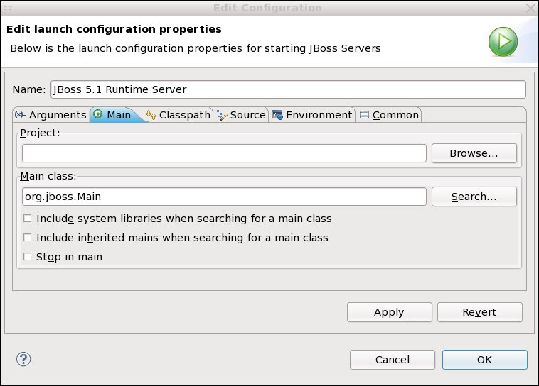
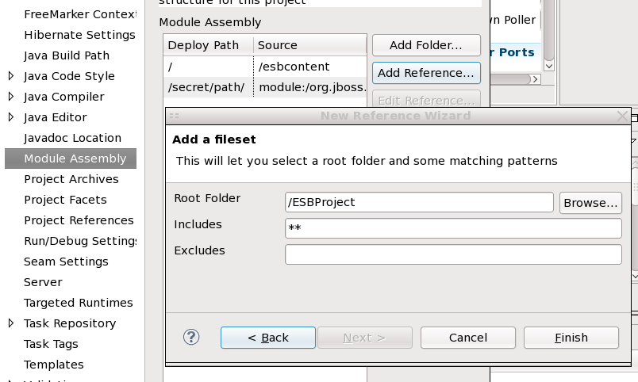

General
JBoss Serveres View Deprecated
The JBoss Servers View has been deprecated, as the WTP server's view is now able to be extended and added to. The JB Servers View will remain until we are absolutely certain there are no overlooked use cases.
JBoss AS 5.1 schemas added
Now XML Catalog contains schemas for JBoss AS 5.1.0.GA listed below:
- jboss-common_5_1.xsd
- jboss_5_1.xsd
- jboss-ds_5_0.xsd
- jboss-web_5_1.xsd
- jboss-client_5_1.xsd
Server Types
SSH/SCP Deployment Type Server
A new server type has been created. It's job is to deploy to remote servers via SCP over SSH.
Currently it lacks a wizard, and so all options must be filled in via the server editor. The host is set on the first page, and the credentials are located on the deployment page.

Change Server Main Class
The class used for launching JBoss AS (default is org.jboss.Main) is now possible to set to a different class.

Filesets for WTP Projects
Webtools projects can now use filesets to specify resources to be included into the project. The filesets specifies a root directory and then users can exclude or include files based on patterns.
For now these filesets will only work for ESB / BPEL projects, and will not be functional at all inside WTP's standard project types (EAR, WAR, JAR, etc.) until WTP 3.2 is released.
They are configured via the Module Assembly page, by right-clicking on a project and going to the Module Assembly section, then adding a Fileset-type reference.
